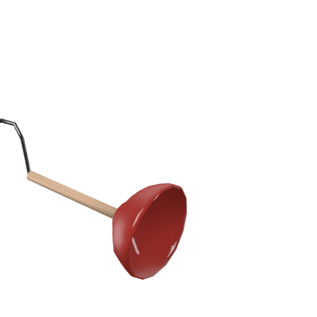
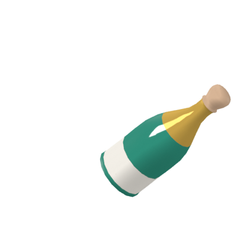
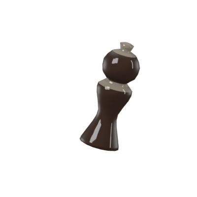
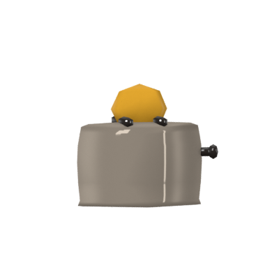
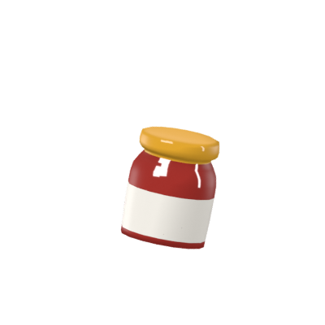
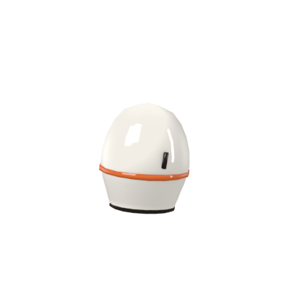
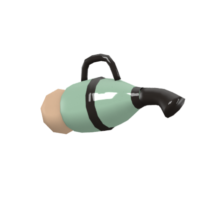
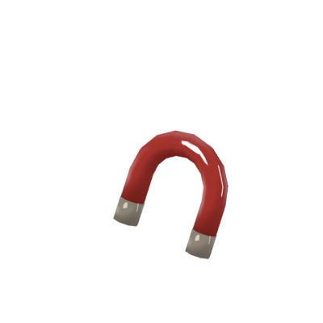

The Bellows
Cone gust, 6 u long, 50 deg wide, fires in the facing direction (aim up/down 45 deg).
Counter: Guard halves the push and keeps your feet planted.
Three people leaving the island like leaves off a lawn.

Plunger-on-a-String
Fires a plunger 9 u at 22 u/s.
Counter: Parry it and it sticks to the shooter's face: you get the yank.
Yank a friend toward you, sidestep, watch them sail past and off the far edge.

The Vintage
Champagne bottle.
Counter: It is loud and slow: jump or parry (the cork comes back).
The recoil kills the shooter as often as the target.

Pepper Mill
Grinds a pepper cloud 3 u wide, lasting 4 s.
Counter: Leave the cloud, or turn your back to the island centre so the sneeze throws you inward.
Ah.

Pop-Up Toaster
Place it on the ground.
Counter: It ticks for 36 f: step off.
The ding.

Jam Jar
Lob it: it splats into a puddle 3 u wide for 8 s.
Counter: Mash Jump.
Being glued to a piece of island at the exact moment that piece stops being island.

Egg Timer
Press Use: you snap back to where you were 120 f ago, with the damage you have now.
Counter: Everyone can see the ghost: stand on it with a heavy attack ready, or break the chunk under it.
Launched, rewound, saved.

The Hoover
Hold Use: suction cone 5 u, pulls fighters at 9 u/s, rubble and gadgets at 16 u/s.
Counter: Guard resists the pull.
Firing one friend at another friend.

Horseshoe Magnet
Tap Use: for 60 f every loose object within 8 u (rubble, gadgets, shells, bobbers, corks) flies to the holder and orbits.
Counter: Useless on a clean stage: deny it rubble.
A cloud of crockery, a held breath, then all of it going one direction.